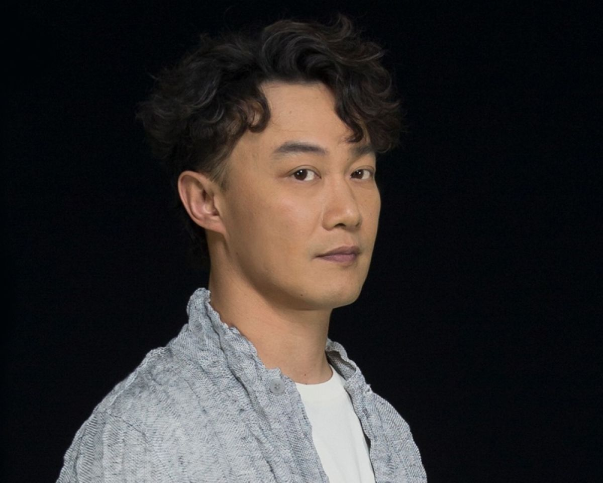
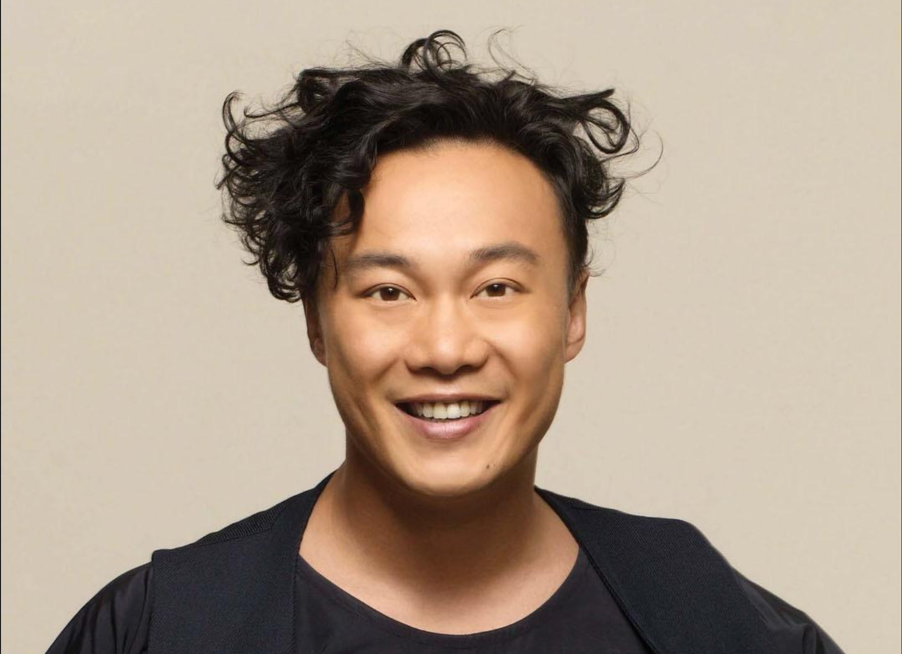
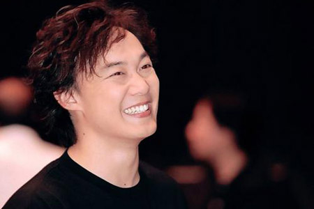

音乐生涯
- 出道初期:1995年-1997年
- 走红时期:1998年-2003年
- 低潮时期:2004年
- 巅峰时期:2005年-2008年
- 平稳发展:2009年-2013年
- 转战大中华
音乐奖项记录
- 5 次获得“四台联颁 - 传媒大奖”（2000-02、2005、2007）
- 7 次夺得“至尊歌曲大奖”（2000、2005、2009、2012、2013、2015、2016）
- 10 次夺得“叱咤男歌手金奖”（2001-02、2005-07、2009-13）
- 9 次兼连续 9 年无间断获得“我最喜爱的男歌手”（2005-13）
- 2 次夺得“最受欢迎男歌星”（2006-07）及“亚太区最爱欢迎男歌星”（2007-08）
- 2 次夺得“劲歌金曲金奖”（2001-02）
- 9 次夺得“至尊唱片大奖”（1998-99、2001-02、2005、2007、2009-10、2013）
- 10 次夺得“全球华人至尊金曲”（2001-02、2005、2007、2009-10、2012-13、2016-17）
- 5 次夺得“我最喜爱的歌曲奖”（1999、2000、2005、2010、2013）
- 13 次兼连续 13 年无间断获得“最优秀流行男歌手”（2005-17）
- 10 次夺得“全年最高销量男歌手”（2002-03、2007-13、2015）
- 16 次夺得“叱咤男歌手奖”（1999-2003、2005-15）
- 18 次夺得“叱咤十大”（1998-2003、2005-13、2015-16、2018）
- 17 次夺得“十大中文金曲奖”（1998-2003、2005-07、2009-13、2015-16、2018）
- 20 次获得“十大优秀流行歌手”（1999-2003、2005-19）
- 10 次夺得“十大劲歌金曲奖”（1998-2003、2005-08）
- 3次夺得“金曲奖最佳国语男歌手奖”（第14届、第26届、第29届）
- 3次夺得“金曲奖年度专辑奖”或“金曲奖最佳国语专辑奖”（第14届、第20届、第29届）
代表作
- K歌之王
- 十年
- 明年今日
- 浮夸
- 富士山下
生活照


